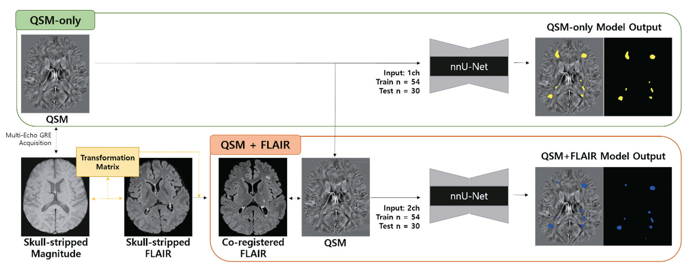

Deep Learning-Based PRL Detection on QSM
Automated detection and burden assessment of paramagnetic rim lesions in multiple sclerosis.
Overview
Paramagnetic rim lesions (PRLs) are a marker of chronic active inflammation in multiple sclerosis (MS), but identifying them manually on quantitative susceptibility mapping (QSM) is time-consuming and requires expertise. I co-led the development of a deep learning framework that automatically detects PRLs and quantifies a patient's PRL burden, comparing a single-sequence QSM-only model with a multimodal QSM + FLAIR model.

What I did
- Built the MRI preprocessing pipeline (skull stripping, FLAIR-to-QSM registration) for 106 patients
- Trained and evaluated 3D nnU-Net models with 5-fold cross-validation for patient-level classification, lesion-level detection, and PRL burden estimation
- Validated the models on internal and temporal test sets and linked automated PRL burden to clinical outcomes in a separate cohort of 117 patients
Key results
- QSM-only model achieved higher lesion-level sensitivity (72.4% vs. 62.1%) and precision (78.2% vs. 65.6%) than QSM + FLAIR on the internal test set
- Both models reached 100% patient-level sensitivity on the temporal test set
- Higher automated PRL burden was associated with poorer cognition (P = 0.002)

Publication
E. Jeong†, D. Seo†, H. H. Moon, H. Yun, Y. Choi, and E. J. Lee. Deep learning-based automated detection and burden assessment of paramagnetic rim lesions on quantitative susceptibility mapping in patients with multiple sclerosis. Korean Journal of Radiology, 27(8):745–757, 2026. [DOI]
Figures reproduced from the publication above. † Co-first author.